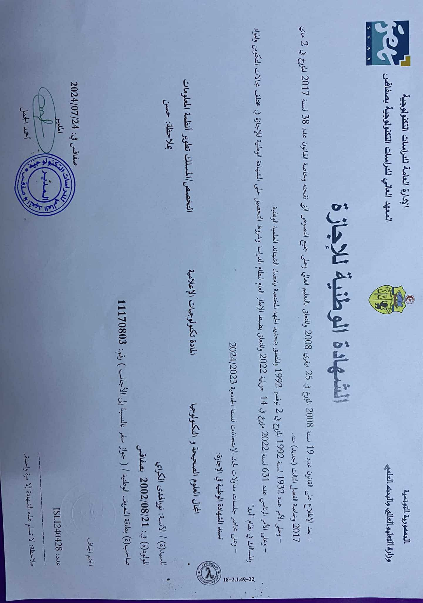
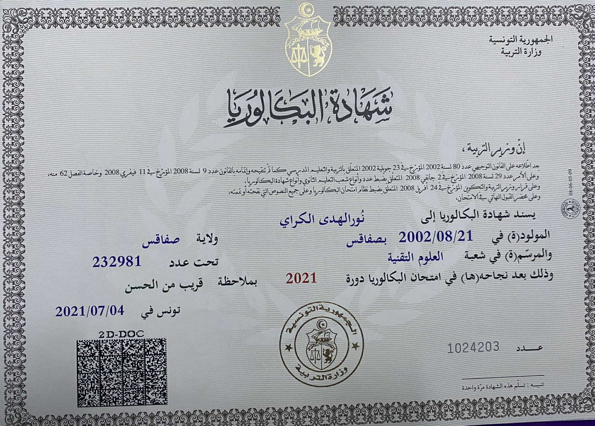

Institut Supérieur des Études Technologiques de Sfax (ISET Sfax) - 2021
J'ai obtenu ma licence en systèmes d'information à l'ISET Sfax, un établissement reconnu pour l'excellence de ses formations dans le domaine des technologies de l'information. Cette formation m'a permis de développer des compétences solides en analyse des données, Big Data et développement web, tout en cultivant une approche pratique face aux défis technologiques.
Lycée Ali bourgiba Mahres - 2018
Mon parcours académique a débuté avec un baccalauréat technique, où j'ai acquis des bases solides en sciences appliquées et en technologies. Cette formation a éveillé ma passion pour l'informatique et les systèmes d'information.
